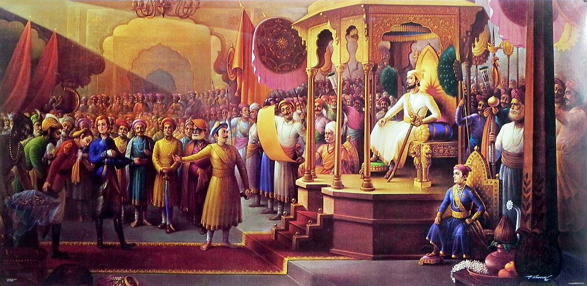

Chatrapati Shivaji Maharaj, a legendary warrior and visionary leader, is a figure of immense admiration and respect in the history of India. His indomitable spirit, unwavering courage, and profound sense of justice continue to inspire generations. Let us pay tribute to the great Chatrapati Shivaji, celebrating his remarkable achievements and his lasting legacy.
Shivaji, born on February 19, 1630, in the Bhonsle Maratha clan, defied the oppressive rule of the Mughal Empire and established the Maratha Empire in the 17th century. From humble beginnings, he rose to become the epitome of a just and benevolent ruler. Shivaji's reign was characterized by his strategic brilliance, administrative reforms, and commitment to the welfare of his people.
One of Shivaji's remarkable achievements was his military prowess. He transformed a small force of guerrilla fighters into a formidable army that challenged the mighty Mughals. Shivaji's guerilla warfare tactics, innovative naval strategies, and ingenious forts earned him the title of the "Mountain Rat" and made him a formidable opponent. His swift and audacious military campaigns nsot only expanded his empire but also secured the coasts and protected his subjects from invasions.
Shivaji's administrative genius was equally impressive. He established a well-organized system of governance, emphasizing justice, equality, and religious tolerance. He championed the cause of the common man, ensuring their safety, prosperity, and dignity. Shivaji's astute policies, such as revenue reforms, irrigation projects, and the promotion of trade, fostered economic growth and brought stability to his realm.
Beyond his military and administrative accomplishments, Shivaji was a champion of culture and Hindu traditions. He revived ancient traditions, patronized scholars, poets, and artists, and fostered a rich cultural heritage.Shivaji's commitment to religious tolerance was evident in his policies, where he respected all faiths and treated his subjects with fairness, regardless of their religious beliefs.
Shivaji's legacy extends far beyond his time. His ideals of self-governance, bravery, and justice continue to inspire millions. He stands as a symbol of resistance against oppression and a beacon of hope for those who strive for freedom and dignity. Shivaji's life serves as a reminder that the power to bring about change lies within each individual, regardless of their background.
Today, as we honor the memory of Chatrapati Shivaji Maharaj, let us embrace his principles and imbibe his values of courage, integrity, and compassion. May we draw inspiration from his extraordinary journey and work together to build a just and prosperous society.

Jai
Bhavani! Shivaji!